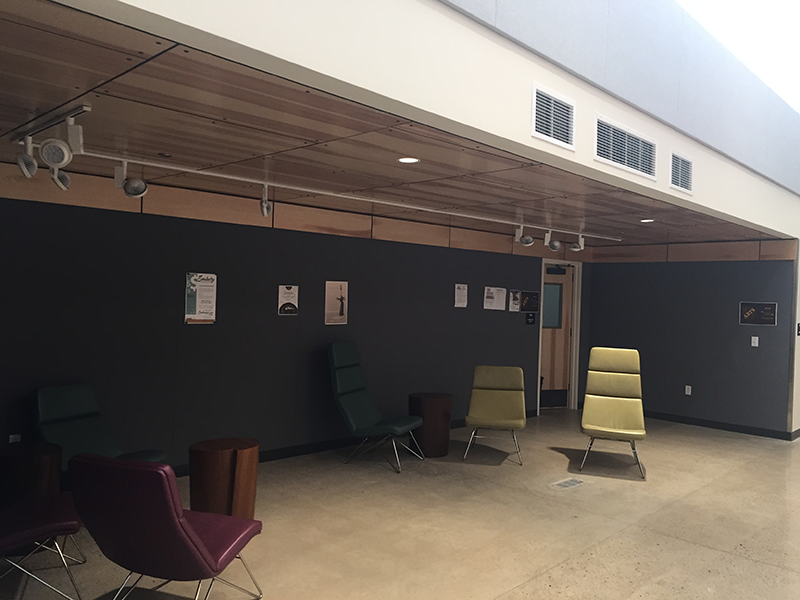

A LONG TIME AGO...
There was a beautiful old building that had been neglected for many years.
THE TROLLEY BLOG
The other day, the architects of the Trolley Building, Mark &Tomas, came by with a photographer. The goals was to take glamour shots for an architectural preservation award submission. The plan was to show in photos the way that the old building, from 1905, had been merged seamlessly with new construction.
Daily Photo
